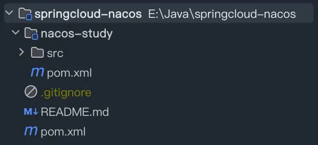
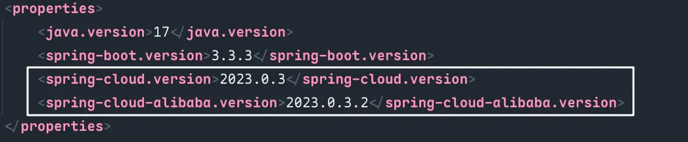

在实习的时候，要使用公司的 Nacos 做配置绑定，但是发现怎么都生效不了，由此重新学习了 Nacos 在 SpringCloud 中的集成使用，耗时两天终于成功，特此记录，后面可以做参考。
# 构建工程
# 工程结构

# 依赖配置
- Nacos 和 SpringCloud 是需要兼容配置的，现在 Nacos 做了和 SpringCloud 相同的的版本号。
- 父工程直接引入 Cloud Alibaba 即可，里面对 Nacos 做了统一配置管理
 - 子工程需要引入 discovery 和 config，不需要添加版本号，由父工程统一管理
# 父工程 pom
<?xml version="1.0" encoding="UTF-8"?> | |
<project xmlns="http://maven.apache.org/POM/4.0.0" xmlns:xsi="http://www.w3.org/2001/XMLSchema-instance" | |
xsi:schemaLocation="http://maven.apache.org/POM/4.0.0 https://maven.apache.org/xsd/maven-4.0.0.xsd"> | |
<modelVersion>4.0.0</modelVersion> | |
<groupId>com.fengxin</groupId> | |
<artifactId>demo1</artifactId> | |
<version>0.0.1-SNAPSHOT</version> | |
<packaging>pom</packaging> | |
<name>demo1</name> | |
<description>demo1</description> | |
<modules> | |
<module>nacos-study</module> | |
</modules> | |
<properties> | |
<java.version>17</java.version> | |
<spring-boot.version>3.3.3</spring-boot.version> | |
<spring-cloud.version>2023.0.3</spring-cloud.version> | |
<spring-cloud-alibaba.version>2023.0.3.2</spring-cloud-alibaba.version> | |
</properties> | |
<dependencyManagement> | |
<dependencies> | |
<dependency> | |
<groupId>org.springframework.boot</groupId> | |
<artifactId>spring-boot-dependencies</artifactId> | |
<version>${spring-boot.version}</version> | |
<type>pom</type> | |
<scope>import</scope> | |
</dependency> | |
<dependency> | |
<groupId>org.springframework.cloud</groupId> | |
<artifactId>spring-cloud-dependencies</artifactId> | |
<version>${spring-cloud.version}</version> | |
<type>pom</type> | |
<scope>import</scope> | |
</dependency> | |
<dependency> | |
<groupId>com.alibaba.cloud</groupId> | |
<artifactId>spring-cloud-alibaba-dependencies</artifactId> | |
<version>${spring-cloud-alibaba.version}</version> | |
<type>pom</type> | |
<scope>import</scope> | |
</dependency> | |
</dependencies> | |
</dependencyManagement> | |
<build> | |
<plugins> | |
<plugin> | |
<groupId>org.springframework.boot</groupId> | |
<artifactId>spring-boot-maven-plugin</artifactId> | |
<version>3.0.7</version> | |
</plugin> | |
</plugins> | |
</build> | |
</project> |
# 子工程 pom
<?xml version="1.0" encoding="UTF-8"?> | |
<project xmlns="http://maven.apache.org/POM/4.0.0" | |
xmlns:xsi="http://www.w3.org/2001/XMLSchema-instance" | |
xsi:schemaLocation="http://maven.apache.org/POM/4.0.0 http://maven.apache.org/xsd/maven-4.0.0.xsd"> | |
<modelVersion>4.0.0</modelVersion> | |
<parent> | |
<groupId>com.fengxin</groupId> | |
<artifactId>demo1</artifactId> | |
<version>0.0.1-SNAPSHOT</version> | |
</parent> | |
<artifactId>nacos-study</artifactId> | |
<dependencies> | |
<dependency> | |
<groupId>org.springframework.boot</groupId> | |
<artifactId>spring-boot-starter-web</artifactId> | |
</dependency> | |
<dependency> | |
<groupId>org.springframework.boot</groupId> | |
<artifactId>spring-boot-starter-test</artifactId> | |
<scope>test</scope> | |
</dependency> | |
<!--nacos 服务注册发现 --> | |
<dependency> | |
<groupId>com.alibaba.cloud</groupId> | |
<artifactId>spring-cloud-starter-alibaba-nacos-discovery</artifactId> | |
</dependency> | |
<!--nacos 配置中心 --> | |
<dependency> | |
<groupId>com.alibaba.cloud</groupId> | |
<artifactId>spring-cloud-starter-alibaba-nacos-config</artifactId> | |
</dependency> | |
<dependency> | |
<groupId>org.projectlombok</groupId> | |
<artifactId>lombok</artifactId> | |
<scope>provided</scope> | |
</dependency> | |
</dependencies> | |
<build> | |
<plugins> | |
<plugin> | |
<groupId>org.springframework.boot</groupId> | |
<artifactId>spring-boot-maven-plugin</artifactId> | |
<configuration> | |
<mainClass>com.nacos.study.NacosStudyApplication</mainClass> | |
<layout>JAR</layout> | |
</configuration> | |
<executions> | |
<execution> | |
<goals> | |
<goal>repackage</goal> | |
</goals> | |
</execution> | |
</executions> | |
</plugin> | |
</plugins> | |
</build> | |
</project> |
# 项目 yaml 配置文件
# 本地配置
server: | |
port: 80 | |
spring: | |
application: | |
name: nacos-study | |
# 必须配置！！！ | |
# 'nacos:' 之后的就是我们在 Nacos 远程的配置文件 DataId | |
config: | |
import: "nacos:nacos-study.yaml" | |
cloud: | |
nacos: | |
# 服务发现 | |
discovery: | |
server-addr: 122.51.165.51:8848 | |
# 配置中心 | |
config: | |
file-extension: yaml | |
server-addr: 122.51.165.51:8848 |
注意点：
如果没有 spring.profiles.active，远程文件 DataId 即
${prefix}.${file-extension}反之则是
${prefix}-${spring.profiles.active}.${file-extension}
# Nacos 远程配置
# 使用 @Value | |
study: | |
name: nacos | |
# 使用配置类 | |
mynacos: | |
config: | |
mapping: | |
pdf: 0 | |
xls: 1 | |
xlsx: 1 | |
doc: 2 | |
docx: 2 | |
ppt: 3 | |
pptx: 3 | |
png: 4 | |
jpg: 4 | |
jpeg: 4 |
# SpringBoot 使用
@RestController | |
// 配置热刷，可选 | |
@RefreshScope | |
public class Controller { | |
/** | |
* 普通值的配置绑定，仅此注意点 | |
*/ | |
@Value ("${study.name:local}") | |
private String name; | |
@Autowired | |
private FileTypeConfig fileTypeConfig; | |
@GetMapping("/name") | |
public String getName (){ | |
System.out.println (fileTypeConfig.getMapping ()); | |
return name; | |
} | |
} |
// 必须是 bean | |
@Component | |
// 必须要有 set 和 get 方法 | |
@Data | |
//prefix 到 mapping 的上一层！！！ | |
@ConfigurationProperties(prefix = "mynacos.config") | |
// 配置热刷，可选 | |
@RefreshScope | |
public class FileTypeConfig { | |
// 属性必须和要映射的 map 一致！！！ | |
private Map<String,Integer> mapping; | |
/** | |
* 自定义方法，可选 | |
*/ | |
public Integer getCode(String fileType) { | |
return mapping.get(fileType); | |
} | |
} |
项目启动，访问接口即可发现读取远程配置成功！
- 加载远程配置成功
- 监听配置变更
- 结果